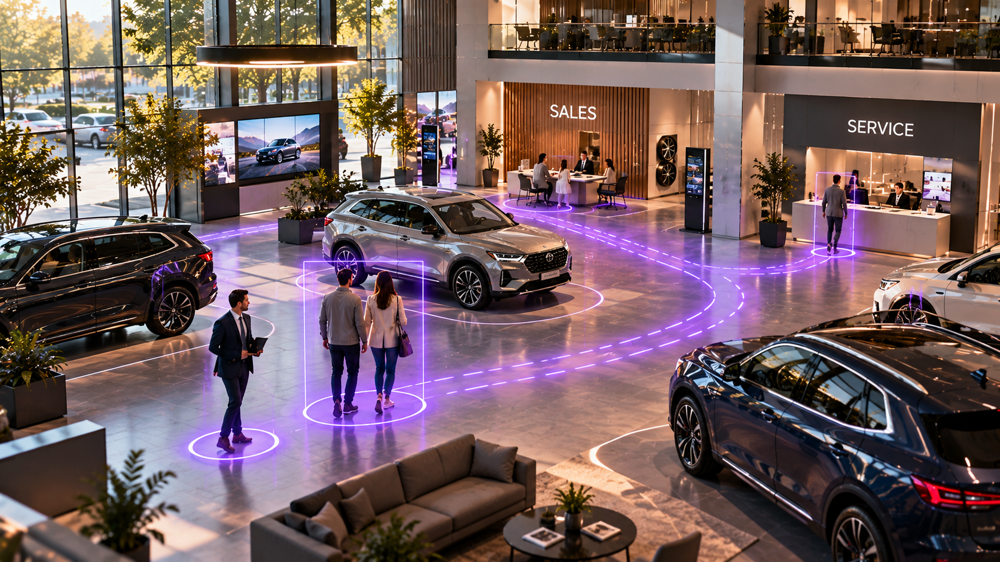
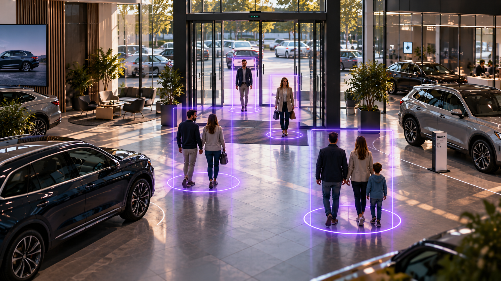
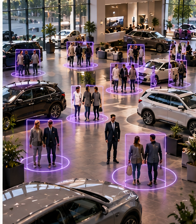
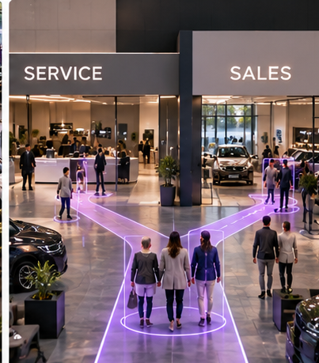
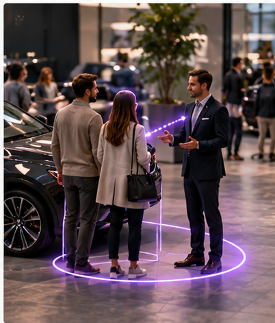

AUTOMOTIVE / CONTEXT 01 / 10
Detecte las oportunidades de contacto perdidas. Responda. Evalúe los cambios.
Ofrezca al concesionario una visión práctica de dónde se pierden oportunidades de contacto, cuándo la cobertura del personal es limitada y cómo la exploración de modelos avanza hacia un seguimiento registrado.
PFM combina el diseño de medición, el análisis operativo y las revisiones con el concesionario. El objetivo es la mejora comercial; para demostrar resultados se necesita una medición de referencia y un seguimiento comparable.

AUTOMOTIVE / MEASURE 02 / 10
Una base fiable empieza en la entrada.
Cuente los pasos de entrada y salida por cada acceso y franja horaria seleccionados. Mantenga separados el número de personas, los pasos repetidos y las visitas derivadas. La formación de grupos es un análisis aparte que debe validarse.
Opciones de acceso propuestas: Xovis o Milesight. La elección del producto, la cobertura y la exclusión del personal requieren una revisión en las instalaciones.

AUTOMOTIVE / UNDERSTAND 03 / 10
La exposición, el servicio y la recepción cumplen funciones distintas.
Muestre qué zonas definidas se alcanzan y cómo continúan los recorridos. Visitar la zona de servicio es un destino; no demuestra por qué entró la persona.
Para confirmar un motivo relacionado con el servicio se necesitan datos adicionales de citas o registros. Mantenga visibles las visitas mixtas y las de motivo desconocido.

AUTOMOTIVE / UNDERSTAND 04 / 10
Observe el recorrido por la exposición.
Dentro de la cobertura de medición validada, siga las transiciones entre las zonas de modelos. Muestre las combinaciones observadas sin presentar un recorrido como preferencia personal o intención de compra.
Ampliación propuesta: LiDAR o una configuración 3D de Xovis adecuada. Deben validarse el traspaso entre sensores, las obstrucciones y las líneas de visión.

AUTOMOTIVE / UNDERSTAND 05 / 10
Observe los patrones de permanencia ante los modelos e identifique dónde investigar.
Compare el acceso a las zonas y el tiempo de permanencia para evaluar la ubicación de los modelos y el enfoque de las campañas. Un umbral configurado de permanencia puede señalar una oportunidad de contacto; no demuestra intención de compra.
Defina los límites de las zonas, el tiempo mínimo de permanencia, las visitas repetidas y las trayectorias de paso antes de mostrar comparaciones entre modelos.

AUTOMOTIVE / UNDERSTAND 06 / 10
Haga visibles las posibles lagunas de contacto mientras aún hay tiempo para responder.
Separe las visitas que cumplen el criterio y tienen un indicador de contacto, los visitantes que siguen presentes sin un indicador de contacto y las visitas finalizadas sin que se haya detectado un indicador de contacto. Utilice estos grupos para analizar la cobertura y mejorar el proceso de bienvenida.
Cumplir el criterio significa superar una regla de permanencia validada, no ser un comprador confirmado. El contacto requiere una distinción validada del personal y reglas validadas de proximidad y duración; la ausencia de una señal detectada no demuestra que no haya tenido lugar una conversación.

AUTOMOTIVE / UNDERSTAND 07 / 10
De la exposición al siguiente paso observable.
Mida la presencia en la zona de mesa acordada y analice qué ocurre después de las señales de contacto. Sentarse en la mesa no demuestra que haya un presupuesto, un lead registrado o una venta.
Un porcentaje de paso de contacto a mesa requiere las mismas trayectorias válidas y el mismo periodo de observación. Un presupuesto requiere un registro independiente en CRM o DMS.

AUTOMOTIVE / PROVE 08 / 10
Relacione los patrones del concesionario con el marketing y el seguimiento registrado.
Compare las fechas de campaña, los volúmenes de visitas, la permanencia en zonas de modelos y la cobertura del contacto. Añada los leads, presupuestos y pedidos de CRM/DMS para revisar el proceso con el concesionario.
Mantenga alineados los periodos de las fuentes, los canales y las definiciones. Sin una vinculación válida de cohortes de visitas, los totales de CRM siguen siendo series independientes. La asociación con una campaña no demuestra su impacto.
AUTOMOTIVE / CONFIGURE 09 / 10
Empiece con poco y con dependencias claras.
Seleccione el recuento en las entradas, las zonas de la exposición, una distinción validada del personal y un flujo de alertas. Añada los turnos del personal, los calendarios de campañas y los enlaces permitidos de CRM/DMS cuando la pregunta elegida lo requiera.
Según la información del producto facilitada, es posible enviar alertas a teléfonos o relojes inteligentes, siempre que haya un canal de entrega compatible, una regla configurada y una persona responsable de la operación. Esta revisión no activa ninguna notificación ni integración.
AUTOMOTIVE / ACT 10 / 10
Acuerde la respuesta, la persona responsable y las pruebas del cambio.
Pruebe una alerta de bienvenida, ajuste la cobertura en las horas punta o revise el seguimiento de campañas. PFM y el concesionario acuerdan una medición de referencia, una persona responsable de la acción y una fecha de evaluación; después comparan los indicadores de contacto y comerciales.
Compare periodos equivalentes y cohortes con resultados suficientemente consolidados, teniendo en cuenta la mezcla de canales, el personal y la estacionalidad. Describa primero los cambios observados; afirme que hubo impacto solo si la evaluación lo respalda. Las acciones de sistemas en esta revisión son simuladas.
¿QUÉ OBTENEMOS?
Vista ilustrativa del rendimiento de la exposición para priorizar a diario y revisar con el concesionario.
Northstar Retail Group | Concesionario A | 5 nov 2026 | 09:00-14:05 CET | Instantánea ilustrativa
68 visitas que cumplen el criterio = 40 con indicador de contacto + 22 finalizadas sin indicador de contacto detectado + 6 que siguen presentes sin indicador detectado. Cobertura del contacto = 40 / 68 = 58,8 %, redondeada al 59 %.
Zona de modelos 4: permanencia de 2 min 05 s, sin señal de contacto detectada. Umbral de alerta de ejemplo: 90 s. Envío configurado a un teléfono o reloj inteligente; aquí no se envía ningún mensaje.
7 presupuestos | 3 pedidos. Registros ilustrativos durante el día de referencia. Son totales independientes, no conversiones de la cohorte de visitas de hoy.
Unidad: visitas de personas deduplicadas, no grupos ni personas identificadas. Visita que cumple el criterio: al menos 60 segundos en una zona de modelos; regla de ejemplo que no indica intención de compra. Contacto: indicador validado de contacto con el personal.
Ejemplo ficticio inspirado en el panel; valores creados de forma independiente. Sin datos de clientes, referencias comparativas, datos en directo ni pantalla de producto garantizada. CRM a las 14:00 CET; medición física a las 14:05 CET.
DEL ANÁLISIS A LA ACCIÓN
Las alertas operativas y las revisiones estructuradas con el concesionario convierten la medición en un proceso de mejora repetible.
Una regla configurada que detecte tiempo de permanencia sin señal de contacto puede activar una notificación en un teléfono o reloj inteligente. Asigne un destinatario disponible, confirme la recepción de la alerta, proporcione cobertura y revise la respuesta.
Según la información del producto facilitada, las alertas son posibles. Confirme la compatibilidad del canal, la distinción del personal, las zonas, la latencia, la supresión de alertas repetidas y el escalado para el despliegue elegido. Este ejemplo es simulado.Utilice las franjas de mayor actividad, el tiempo hasta el primer contacto y la permanencia por zona para elegir un experimento de personal o distribución. Asigne una persona responsable y compare las mismas definiciones antes y después.
Mantenga visibles las visitas sin señal de contacto. Analice por separado el tiempo hasta el contacto entre las visitas con indicador de contacto. Una permanencia más larga ante un modelo no demuestra interés.Combine calendarios de campañas, etiquetas de canal y registros CRM/DMS aprobados con patrones agregados del concesionario. Revise si cambian a la vez las visitas, la permanencia ante los modelos, los contactos y el seguimiento registrado.
Utilice vinculaciones con consentimiento o permitidas por otros medios, deduplicación y un horizonte de resultados fijo. Sin vinculación, compare series agregadas; no atribuya pedidos individuales ni afirme un aumento causal debido a la campaña.Acuerde una medición de referencia, un registro de acciones y una fecha de revisión. Los resultados demostrados requieren pruebas comparables; no se prometen aumentos de ventas, retorno de la inversión ni plazos de recuperación.
AMPLIACIÓN OPCIONAL / MOBILE & GEO
Añada zonas de procedencia, patrones de visita relacionados con la marca y visitas agregadas a otros concesionarios cuando una fuente adecuada permita este análisis. Esto describe un panel o una población modelizada, no a cada visitante contabilizado en la entrada.
Utilice zonas de procedencia agregadas e indique la población de origen, el periodo y la definición de las zonas. No vincule la procedencia individual con una trayectoria de sensor.
Las visitas a ubicaciones relacionadas con la marca son una señal contextual. El término afinidad de marca requiere una definición explícita del proveedor; no permite afirmar preferencias, propiedad ni intención de compra.
La disponibilidad, la representatividad, los mínimos de volumen y la asignación de ubicaciones deben confirmarse con el proveedor de datos. Por eso, esta propuesta no incluye mapas ni porcentajes ficticios para este análisis.
No se ha modificado el folleto existente. Esta propuesta no añade resultados de clientes, precios, incrementos, referencias comparativas ni acciones de sistemas en directo.
Las escenas anteriores muestran una selección preferente para revisión. Todas las imágenes siguientes son candidatas. Los marcadores morados son conceptuales y no demuestran cobertura de sensores, identidad ni rendimiento de medición.






La imagen de calle facilitada con personas pasando queda fuera de Automoción: muestra el comercio minorista y no respalda la historia del concesionario.